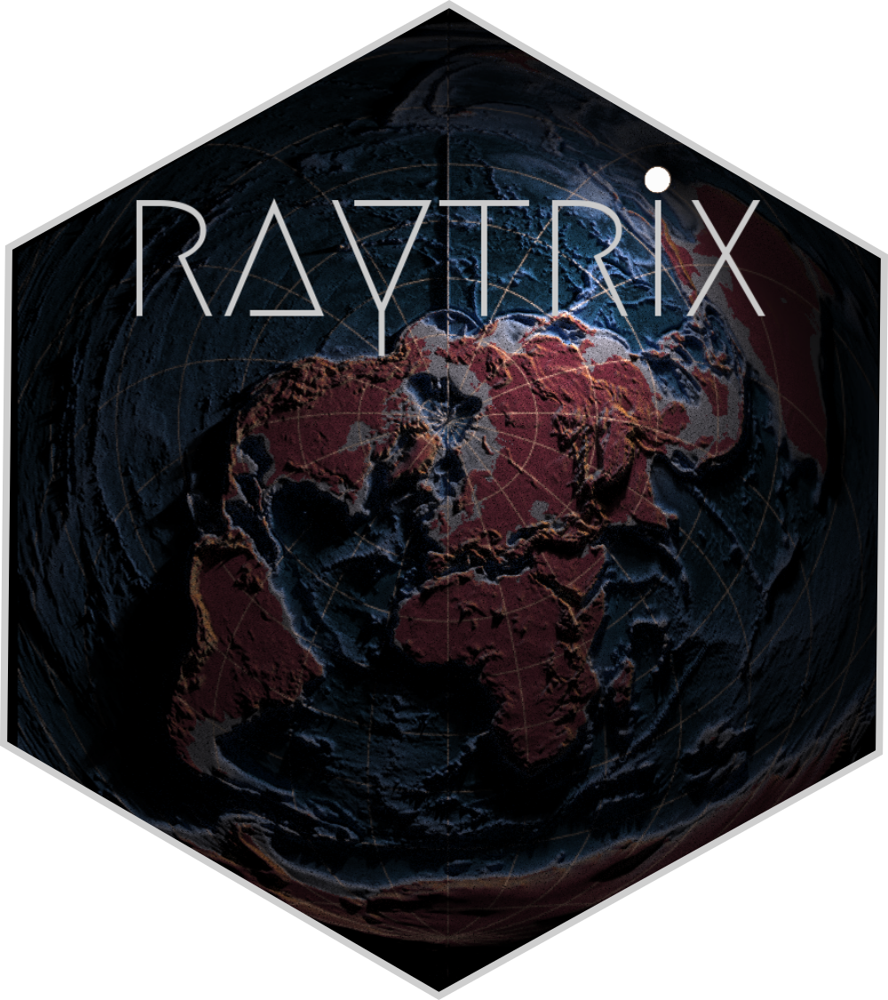
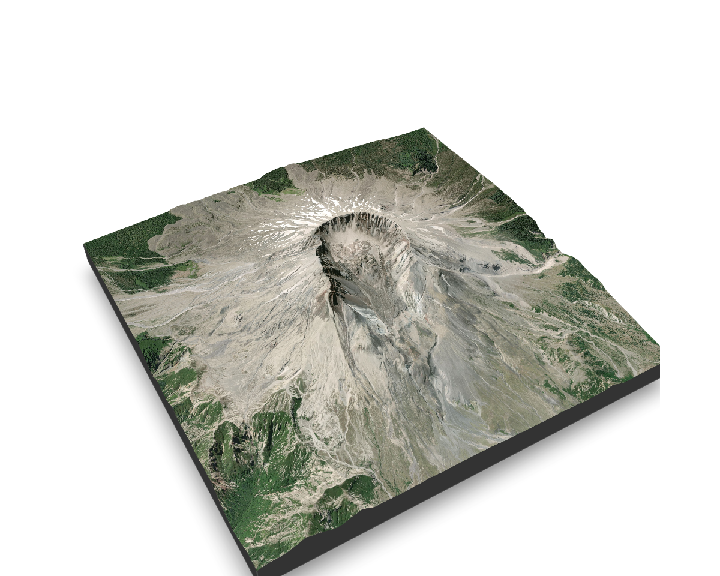
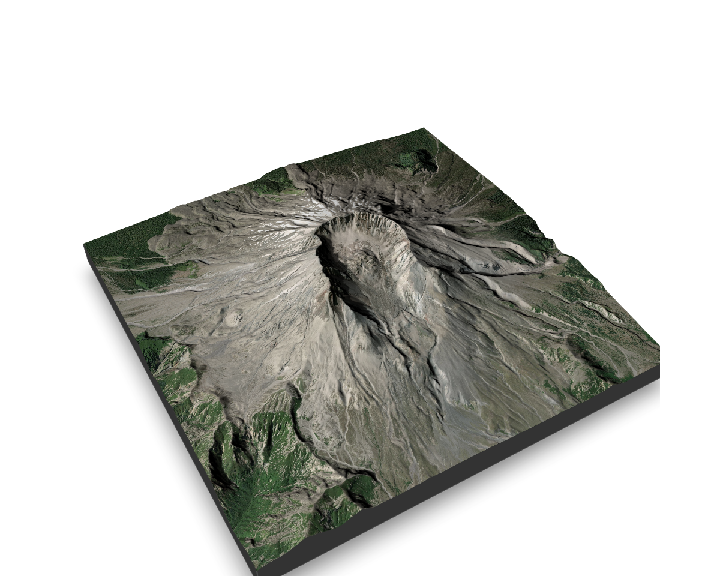
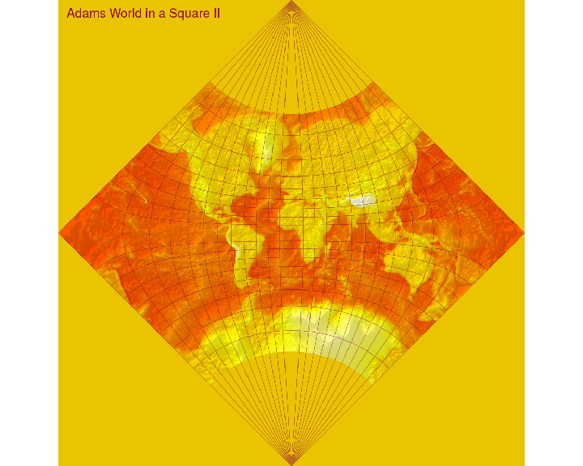

A {rayshader} plugin providing a spatial framework and convenience functions for accessing spatial data. This is similar to and may replace {ravista}. But things are still very much under development.
Quick Introduction
Install
Project Canvas: with {raytrix} we must first set out a strict geospatial region which defines the bounds of the area to be mapped; This is referred to as the canvas. This can be achieved by direct input or with a spatial oject (currently sf and RasterLayer, RasterBrick). global values are set of extent and projections which can be viewed with get_canvas(). An Extent object can be produced and be used with {rayshader} functions such as generate_overlay.
set_canvas(xmin, ymin, xmax, ymax, crs) # basic argument for setting canvas - Done
set_canvas_raster(rasterLayer) # set canvas from a raster data class - Done
set_canvas_sf(sf/sfc, mask = FALSE) # set canvas from an sf/sfc object - Done
set_canvas_centroid(long, lat, radius, crs=4326) # set canvas from cetroid and radius - Done (although will probably change)
get_canvas() # retrieves the extent and crs parameters if required for additional steps... - Done
canvasExtent() # get an object of class Extent for using in other {rayshader} functions - DoneData: Now you can use {raytrix} to warp raster data from online or on-disk sources using the awesome {vapour} package. These functions enable the retrieval of topographic (or other single band raster) and overlay (3-band raster data) data in a “rayshader-ready” format. i.e. matrix for the topo_matrix and 4 dimensional array for the map_drape (4th dim being alpha).
topo_matrix(res, src='aws', ...)
map_drape(res, src='esri.aerial', alpha=1 ...) # many options now available here - need to check in on API Key requirements.Helplers: Some additional helpers for easing interoperability with other spatial and plotting libraries (More to come here:
Examples
Simple map drape over a DEM.
library(raytrix)
library(rayshader)
# ---- Mt St Helens ------------
.lat <- 46.200732
.long <- -122.187082
set_canvas_centroid(.lat, .long, radius = 7000)
get_canvas()$extent
tc <- topo_matrix(20)
ov <- map_drape(5)
plot_3d(ov, tc, zscale=20*0.75, windowsize = 1000,
theta=150, phi=45, zoom=0.7, fov=50)
render_snapshot(clear=TRUE)
Add some shading to the scene with {rayshader}
# build in rayshader shading tools
ov %>%
add_shadow(., ray_shade(tc, zscale=20*0.75,
sunangle=70, sunaltitude= 30), 0) %>%
plot_3d(., tc, zscale=20*0.75, windowsize = 1000,
theta=150, phi=45, zoom=0.7, fov=50)
render_snapshot(clear=TRUE)
Global hill shade using the Adams World in a Square II projection.
prj <- "+proj=adams_ws2"
set_canvas_world(projection = prj)
# get_canvas(3e4) # check canvas resolution with this in case your being ambitious...
tm <- topo_matrix(3e4)
grats <- sf::st_as_sf(graticule::graticule(proj = prj, tiles=T)) # get graticule
tm %>%
height_shade(heat.colors(256)) %>%
add_shadow(lamb_shade(tm, sunaltitude=25, zscale=0.8)) %>%
add_overlay(generate_polygon_overlay(grats, canvasExent(),tm,
linecolor="#900C3F", palette = NA), alphalayer = 0.7) %>%
plot_map(title_text = 'Adams World in a Square II', title_color='#900C3F')